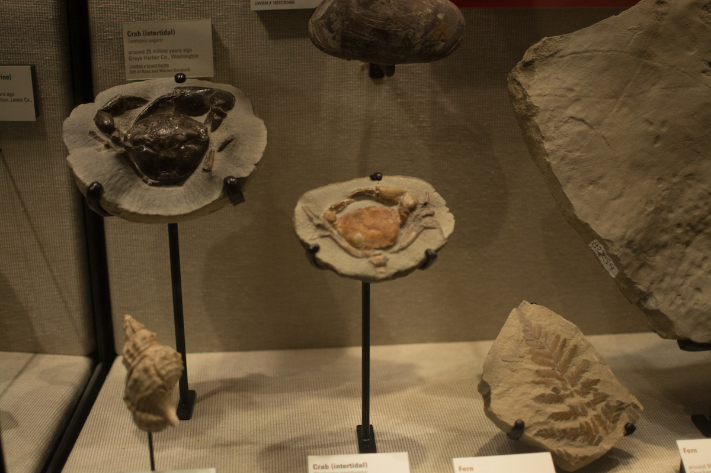
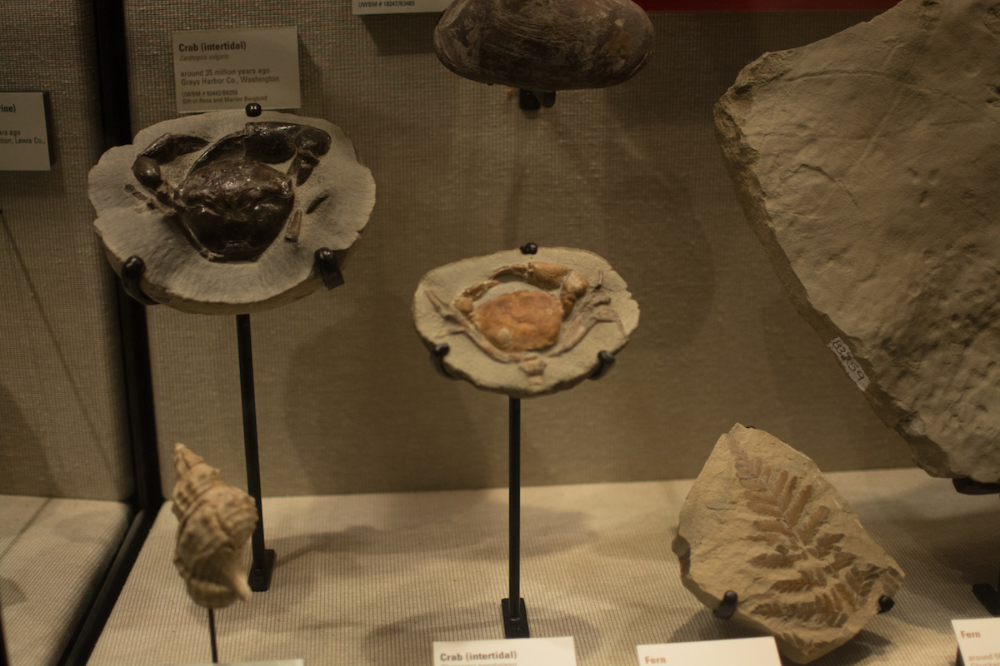

Aura
Collaborative Mixed Reality Museum Experience
Interaction Design, Video Prototyping
2017 Microsoft Design Expo
WITH Branden Keller / Maureen Mclennon / Minh-anh Nguyen / Brian Orlando
Background
2017 Microsoft Design Challenge
Intentional Design for Positive Cultural Impact in Mixed Reality—Design a product, service or solution that demonstrates the value and differentiation of Mixed Reality. Your creation should demonstrate the best qualities of a Mixed Reality experience that takes into consideration the environment, objects and people that will be participating in your solution. It should meet a clear need and be extensible to wider applications.
As part of a graduate design class, we were given 12 weeks to complete the challenge and create a video prototype.
Contributions
Secondary Research
Role of Museums
We first set out to understand the role and meaning of museums in today's society. Eugene Dillenburg defined a museum as "an institution whose core function includes the presentation of public exhibits for the public good". We identified three core aspects of museums:
- Museums have physical artifacts.
- Museums are intentional.
- Museums enable face-to-face interactions with staff and other patrons.
Visiting Museums
We journeyed to Seattle's Pacific Science Center and UW's Burke Museum to get a feel for the spaces and interview staff members . We learned that many exhibits are stagnant; it takes a lot of work and funds to make a change.
 

Design Principles
Contextual
In fulfilling it's purpose of preserving artifacts, museums lift these objects from the worlds whence they came. Our design should put items in their original context to help viewer understanding.
Dynamic & Interactive
Current systems struggle implementing content that is engaging for all audiences. Exhibits are stagnant for long periods of time.
Collaborative
People are naturally together in a museum space. Our design should allow for an individual experience but also people to experience it together.
Storyboarding
Sensory & Scale
Mixed reality allows for real scale where usually not possible. Similar to the butterfly room in the Pacific Science Center, our storyboard concept included immersive lifesize visuals and sounds.
Feedback
Our sponsors at Microsoft were drawn into our use of sensory elements, but wanted us to go beyond dinosaurs and think about age appropriate experiences.
Keyframes
Enhancing the Burke Museum
We had an in-depth visit to the Burke Museum to see how we could enhance their current exhibits with mixed reality. We took photos at points of intervention and designed mixed reality visualizations over-top.
Feedback
Before moving into the video prototype the feedback from Microsoft was two fold: don't bring people into an immersive 3D environment then go right back to flat interfaces & be conscious of air fatigue during interactive elements.
Filming
A large portion of our time was spent filming and refilming the key interactions in our experience. We had a lot of fun waving our hands around and reacting to things that didn't exist in front of normal museum patrons! Brian and Branden took on the majority of the visual effects production. Shoutout to them for their Spielberg quality work!
Key Qualities
Aura is a mixed reality museums experience that tells the story of museum artifacts in a way that hasn’t been possible before. With Aura, any museum can be the museum of tomorrow.
Interactions
Conversational Trigger
Staff members play a critical role in mediating the museum experience and engaging museum goers. Here the mixed reality egg hatch is triggered by the physical handoff from staff to visitor of an egg.
Gesture
Some museum elements require specific motions. The visible 'aura' permeating from the wall invites visitors to engage. Simple 2D content can easily transform into interactive 3D elements.
Proximity
As visitors approach museum artifacts, Aura uses scale and context to immerse visitors in the artifact's original environment.
Looking Forward
Artifacts Everywhere
Whether inside or outside of the museum space, mixed reality technology can be used to create contextual environments. While Aura was designed to function in the museum space, we do see similar technologies being used to create museum experiences all around us.
Just Fun
Despite the struggles of acting, working on an immersive mixed reality project was just plain fun. Engaging in a design space without established guidelines and best practices left a lot to our imagination. I would be thrilled to implement and test the interactions we designed and establish some of my own best practices for interactions in mixed reality.